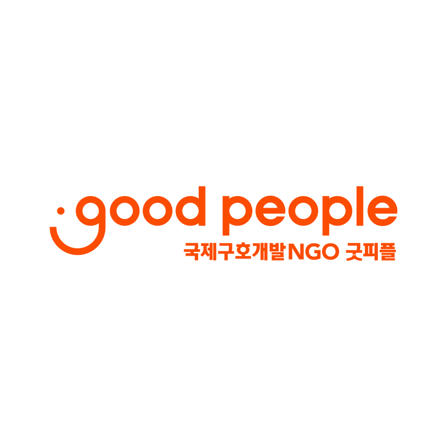
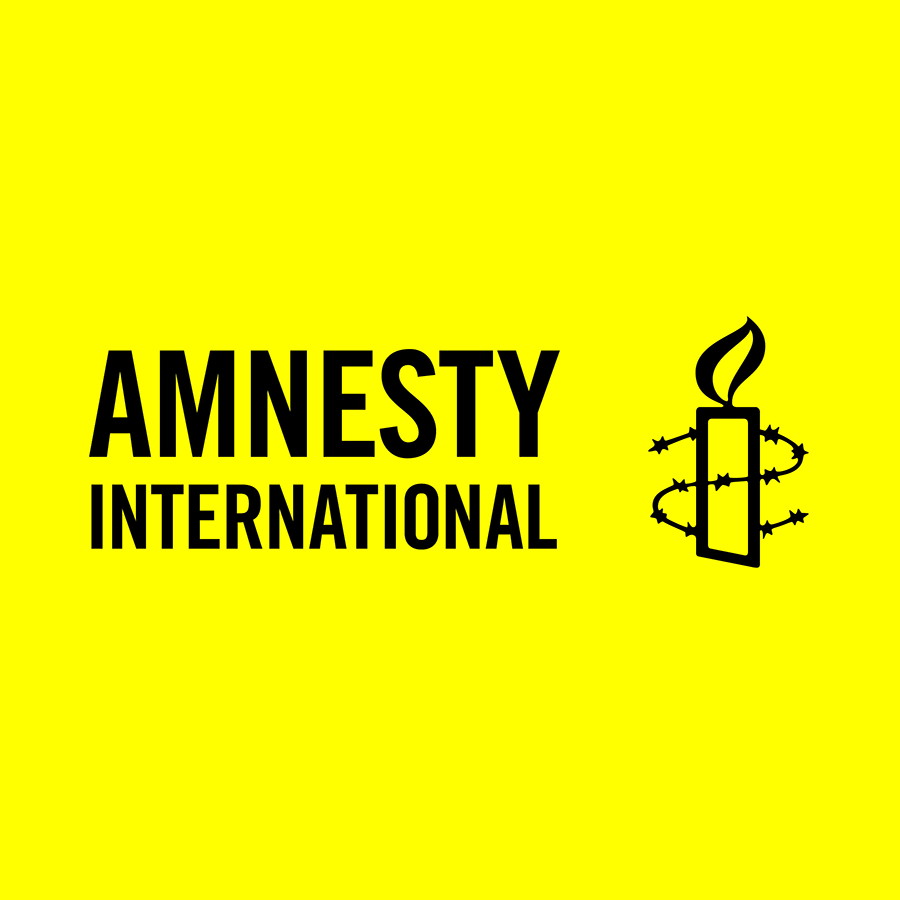
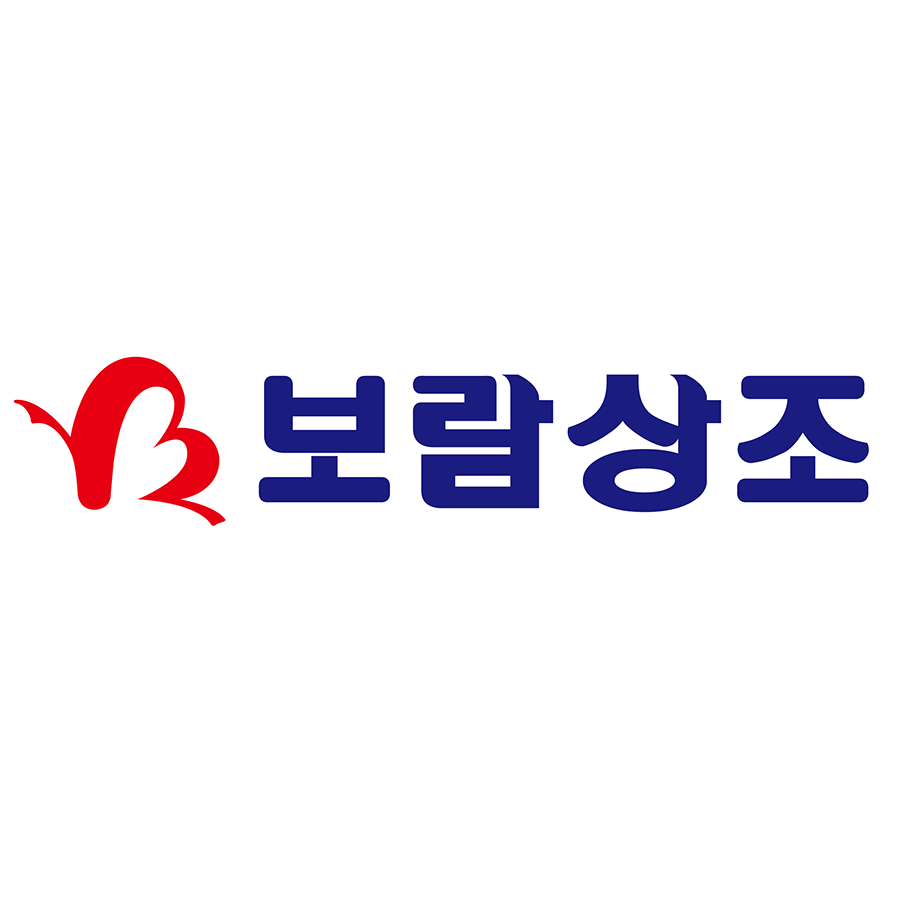
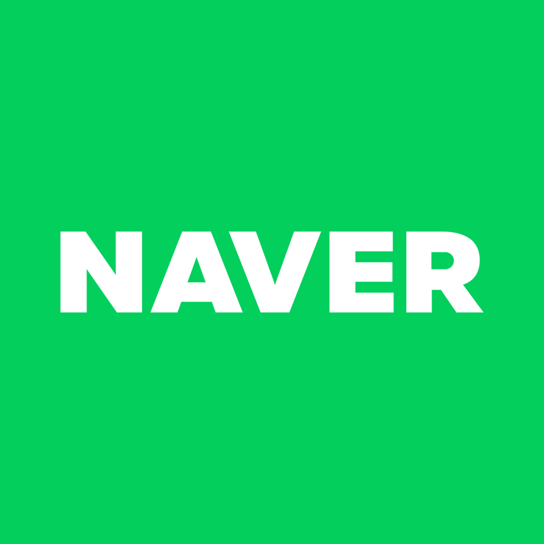
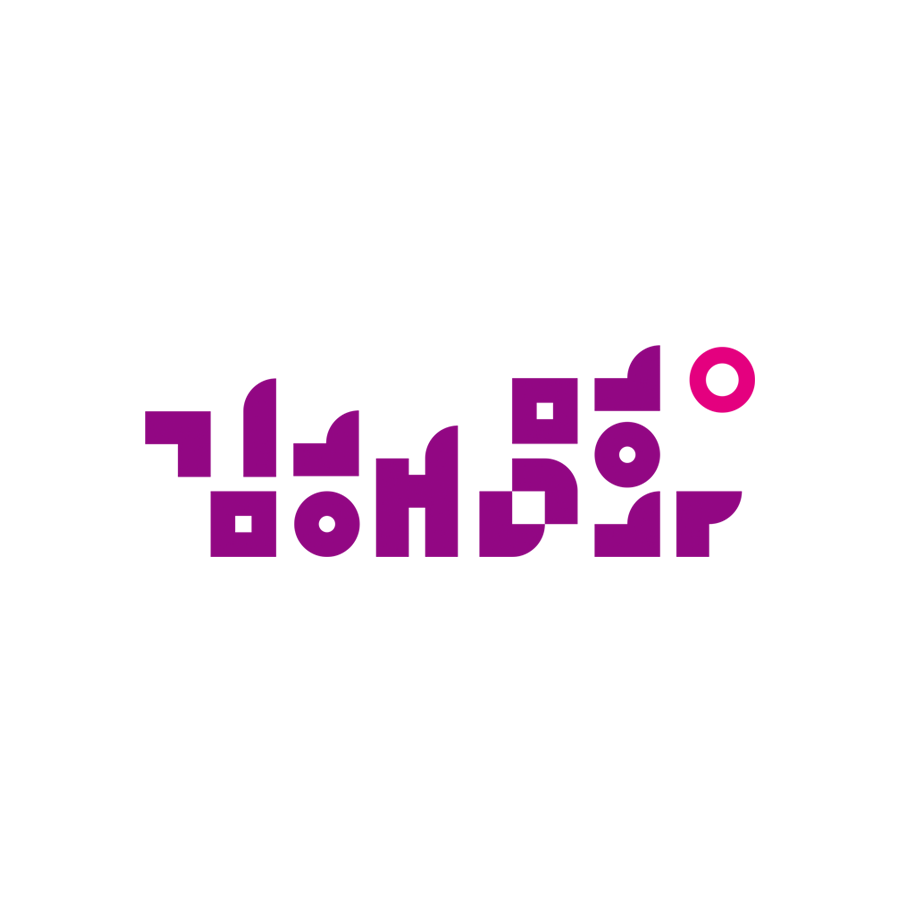

고객과 상호 믿음을 바탕으로
더 나은 미래를 꿈꿉니다
F2F MARKETING
F2F는 대면 마케팅, Face to Face의 약자로, 고객들과 만나 소통하고, 니즈를 파악하여 상품을 홍보하고 판매하는 세일즈 방법입니다.
친밀감을 만드는것이 주 성공 포인트로, 편안하고 친근한 화법을 통해 고객들의 원하는 바를 정확히 파악할 수 있기 때문에
마케팅에서 신뢰할 수 있는 방법 중 하나입니다.
코로나19로 인한 마케팅 업계의 어려운 현상황에서도 저희 슈퍼마케팅은
고객과의 안전을 최대한 준수하며 신뢰를 형성하도록 노력하겠습니다.
WITH CLIENT
(주)슈퍼마케팅은 2020년 6월에 설립된 클라이언트 서포트 전문 기업입니다. 대기업과 NGO, NPO 단체를 중심으로 위탁을 받아
최고의 결과를 가져다 드립니다. 양질의 마케터를 양성하고, 대중들과 진정성 있는 소통을 추구합니다.
-

국제구호개발 NGO 굿피플
국제구호개발 NGO 굿피플은 1999년 2월, 국경과 인종을 초월하여 가난,질병,재난 등
극심한 위험에 노출되어있는 지구촌 소외 이웃의 현실을 알리고 체계적으로 전문적인 도움의 손길을 전하기 위해
설립되었습니다. 세계 각국의 소외된 지역을 중심으로 아동보호, 교육, 식수위생, 질병 예방 및 치료, 지역개발,
긴급구호 등 다양한 사업을 전개하고 있습니다. -

국제앰네스티
세계 최대의 인권단체인 앰네스티는 모든 사람이 모든 인권을 누리는 세상을 위해 활동합니다.
존엄성을 해치는 위협으로부터 모든 사람의 인권보장을 위해 활동하는 국제인권단체 입니다.
로고의 철조망에 감긴 촛불은 '억압속에서도 꺼지지 않는 희망'을 의미하며 권리를 침해받는 사람들의
편에 서서 정의를 요구하고자 행동합니다. -

보람상조
보람상조는 1991년에 창립되어 장례, 웨딩, 여행등의 사람의 경조사를 책임지는 라이프케어 회사입니다.
고객분들의 경조사를 서포트하여 희노애락을 함께합니다. -

네이버
국내 최대 포탈사이트 네이버는 검색 엔진을 중심으로 블로그, 카페 이외 커뮤니티 서비스와 사업자와 판매자를 연결하는 네이버 쇼핑까지 다양한 편의 서비스를 제공합니다.
-
 야놀자
야놀자국내 호텔, 모텔, 펜션 외 레저, 해외숙소까지 다양한 문화 및 주거공간까지 할인혜택을 제공하며 더불어 건설, 인테리어 토탈 솔루션 회사입니다.
-

문화도시김해
'오래된 미래를 꿈꾸는 역사문화도시'가 비전인 문화도시 김해는 시민을 중심으로 하여 역사와 미래 가치를 담아내는
3개 부문 9개 과제 29개의 사업을 진행합니다. 역사 부문은 도시의 DNA를 발견하는 사업이며, 시민 부문은 시민의 문화력을 증진하는 사업 그리고 미래 부문은 문화도시의 지속 가능성을 마련하는 사업으로 구성되어있습니다.